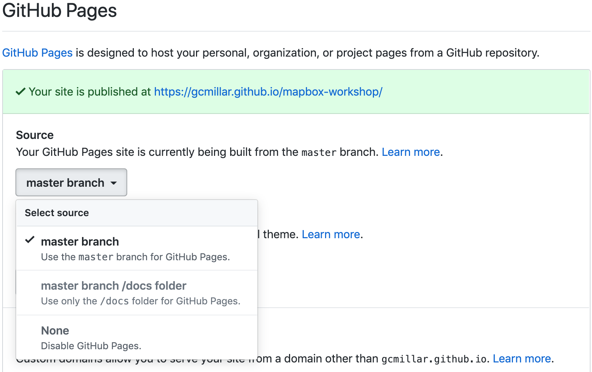
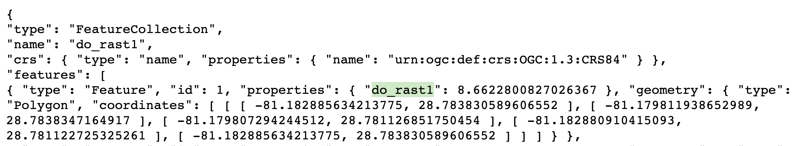
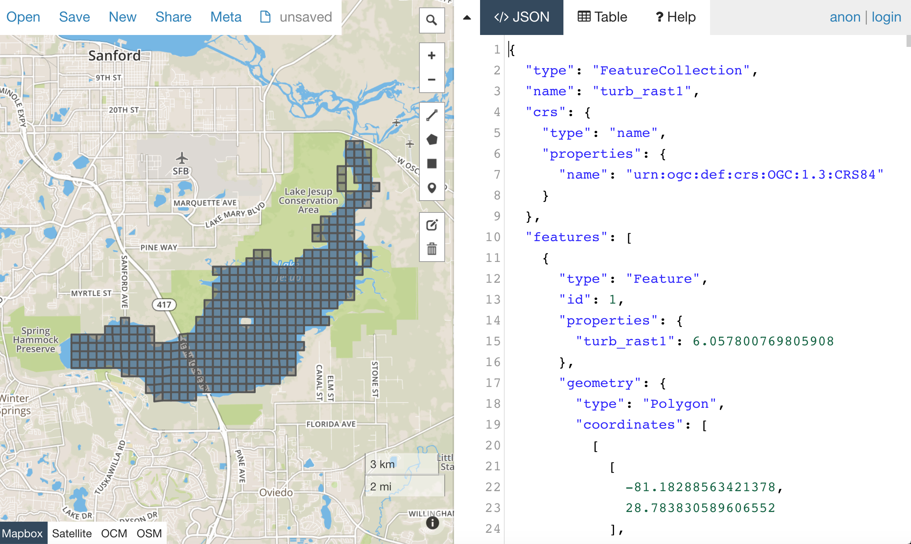

To publish scientific data online, we have several choices based on the discipline and type of data. The resources section lists several repositories which are either general or with some geospatial focus. For the practical part, we will try an absolutely general method which does not use a centralized scientific repository, but which is applicable also for non-scientific geospatial data.
Mapbox GL JS - An Interactive Mapping Platform for Geospatial Data
Mapbox provides many tools to build maps into your website or web-based application, including Mapbox GL JS. Mapbox GL JS is an opensource JavaScript library you can use to display your Mapbox maps, add interactivity, and customize the map experience in your application.
In active development — new features always being added, improving existing features, and fixing bugs
Maps are rendered client-side by the browser
Map data and styles can be changed dynamically
What You’ll Need
Mapbox account and access token.
Mapbox GL JS, a Javascript Library.
Text Editor, Sublime, Atom, Visual Studio Code, etc.
Spatial data object of choice.
index.html file representing skeleton of interactive application in Mapbox. I won’t give you all the answers throughout the tutorial, but this will hopefully serve as a decent basis for working from after the lab if desired.
Learning ‘Goal’
Personally useful and relevant, web-based (published to web) interactive mapping application.
Getting Started
Git
Create new repo on Github
Example: mapbox-workshop
Go to the repo settings tab and set the Github Pages source to the master branch:

Open terminal/cmd to clone repo to local directory:
Its all about the GeoJSON now. First load either some raster or vector data you’ve recently been working with. Using GDAL (2.3.1), specifically the ogr2ogr function, we take our original data (in this example in .shp format), ensure it is in lat/lon, while converting it from .shp to GeoJSON, all with the line below:
This specifically ensures that the coordinates being registered to your GeoJSON (most importantly once exported) are in lat/lon format, which Mapbox requires. If this feels like a sin to do to your data, preach it to the choir. I suppose there is a chance of a setting or parameter being available to circumvent the necessity. However, I have yet to come across such a feature.
Connecting to the Web
Now that you have a workable GeoJSON format of some of your own data:
1. Upload your data to your Github by:
Saving data into local Git directory
Running same Git workflow as earlier:
git add .
git commit -m "upload data"
git push
2. Once changes have been published, go to your online repository and retrieve the online link to your fresh, hot-off-the-plate GeoJSON:
3. Now, lets see what you’re really made of. Try to customize the original index.html with a Mapbox feature of choice.
But first, make sure you change the preset coordinates to the location of your data. Note that this doesn’t have to be spot on, just some coordinates that at least allow you to see your data. You can always adjust them at a later time (for an entire hour, decimal point by decimal point.. do as I say, not as I do):
center: [-81.2023, 28.7302], // starting position
4. Finally, in index.html, use the following code chunk (should be inserted after initialization of Mapbox map) as guide to adding your own data to your map.
Note: If you don’t have your data ready, feel free to use the data links in provided example below to explore how you could apply the same techniques to your own data in the future. However, the data does not correspond to the initial map location (in index.html; North Carolina). The data links below pertain to collected field data on Cyanobacteria (Blue-green algae) blooms in Florida.
Note 2: The coordinates corresponding to the example data is the same as the coordinate example given above [-81.2023, 28.7302].
5. If you’re feeling fancy, take a look into your own exported GeoJSON file, and find the property value you’re mainly interested in visualizing/coloring in your map display (it doesn’t always have to be just one property, but lets keep it simple for now). An example of what this would look like in the GeoJSON, say if I’m interested in coloring the example raster data (do_rast1 in the GeoJSON file below), it would look like:

6. Now, fly away little bird. Use the html code below (which is NOT a standalone script, it is only intended to be used for examples on how to add/apply the functions: map.addSource({}) and map.addLayer({})) to edit your pre-existing html script.
7. Let’s see if you can use them to add and colorize your data of interest:
Below is a full, standalone example html script that allows the filtering of your displayed data, based on their defined source and through some simple CSS properties. See if you can use it as a guide to create a toggable menu that allows you to switch between displayed data in your mapping application.
Note: This script assumes you have multiple data sources to be added as separate map layers, to then later be called on as a toggleableLayerIds variable. This variable is then sent to the CSS property menu as an HTML DOM activeElement Property (study the values in bottom of the script below, ‘active’ and ‘visible’ to get a better understanding if wanted/needed).
E.g., var toggleableLayerIds = [ 'contours', 'museums' ];
Now, this is where I leave you. Use your well-earned extra time to continue exploring some Mapbox features you think would be interesting to add to your mapping application.
Troubleshooting
If you run into any troubles, for instance, your data won’t show up on the map, and you have already looked into Chrome’s or Firefox’s Inspector, seeing no outputted errors in the process, 99% chance it is the formatting of your GeoJSON (don’t @ me).
1. First, ensure your GeoJSON is actually in lon/lat format by opening the raw data file and seeing the format of the coordinates property.* If you discover it is not, try re-running the GDAL code from earlier:
2. If the coordinates check out, go to GeoJSON.io and copy and paste your GeoJSON values (or open as file if it is a lot of data). IF it is in the correct format, meaning there are no leading white-spaces, strangely placed brackets or commas, etc. etc. (I know the GeoJSON is very sensitive–whisper sweet nothings into its ear while copying and pasting for extra troubleshooting ability), then you should see it quickly displayed on the map to the left. Something is probably wrong IF: (1) the map is blank; or (2) your data is “displayed” (you may see a coulpe vector points, or if you’re lucky an entire raster), but seems to be hosted on a blank map with no surrounding geographic features shown.
Example of what it should look like:

If all else fails, my last recommendation would be looking into GeoJSON Utilities, some cmd/terminal utilities “that make things easier”. Sorry, you’re on your own at this point. If these options didn’t help and you’re feeling utterly helpless, welcome to the club ;D.
Explore the general repositories for scientific data linked above and search for a repository which is used in your field. If you find something what is not on the list, you can share it on the message board.
Then go through the instructions to create your own simple, but interactive web map showing a raster and vector and publish it through GitHub. Send the link to the repository and to the web page online to the message board.